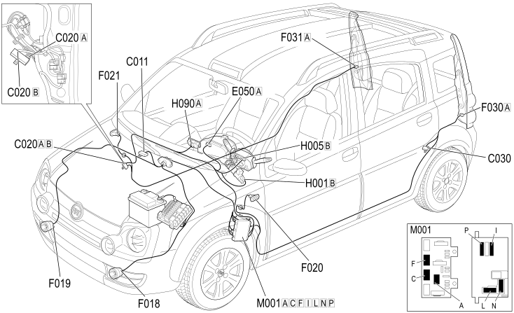

E2020 DIRECTION INDICATORS/HAZARD WARNING LIGHTS - COMPONENT LOCATION
- Path
- Electrical equipment > 1 ELECTRICAL FUNCTIONS > E20 INTERIOR LIGHTING > E2020 DIRECTION INDICATORS / HAZARD WARNING LIGHTS > E2020 DIRECTION INDICATORS/HAZARD WARNING LIGHTS - COMPONENT LOCATION
- Kind
- component location drawing
- Applies to
- engines: 1.3 JTD 16v; all production periods; only with equipment: SUV
- Interactive page
- https://sloeber94.github.io/elrnDB-fPnd/en/#/169002378
Applies to: engines: 1.3 JTD 16v; all production periods; only with equipment: SUV
Component location

Applies to: engines: 1.3 JTD 16v; all production periods
COMPONENTS
Applies to: engines: 1.3 JTD 16v; all production periods; only with equipment: SUV
Component code | Description | Reference to the assembly |
|---|---|---|
Right front earth | - | |
Passenger dashboard earth | - | |
Left rear earth | - | |
Instrument panel | ||
LEFT FRONT DIRECTION INDICATOR | ||
RIGHT FRONT DIRECTION INDICATOR | ||
Left side direction indicator | ||
Right side direction indicator | ||
Left rear light cluster | ||
Right rear light cluster | ||
Ignition switch | ||
Steering column switch unit | ||
Switch control panel | ||
Body computer |
Topics linked from this page (21)
- 5505A multi-function components
- 5520A ignition switch
- 5540A LIGHTING
- 5550A stalk unit
- 5550C TURN SIGNAL/HAZARD WARNING LIGHTS
- 5560B analogue control panel
- 7040A passenger compartment trim
- E50 ENGINE CONTROL AND MANAGEMENT SYSTEMS
- C011 RIGHT FRONT EARTH
- C020 PASSENGER SIDE DASHBOARD EARTH
- C030 LEFT REAR EARTH
- F018 LEFT FRONT DIRECTION INDICATOR
- F019 RIGHT FRONT DIRECTION INDICATOR
- F020 LEFT SIDE REPEATER
- F021 RIGHT SIDE REPEATER
- F030 LEFT REAR LIGHT CLUSTER
- F031 RIGHT REAR LIGHT CLUSTER (FIXED PART)
- H001 IGNITION SWITCH
- H005 STEERING COLUMN SWITCH UNIT
- H090 SWITCH CONTROL PANEL
- M001 BODY COMPUTER